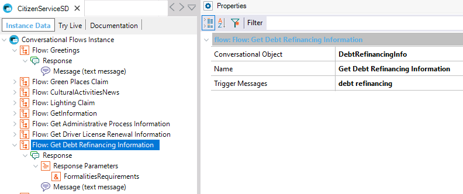
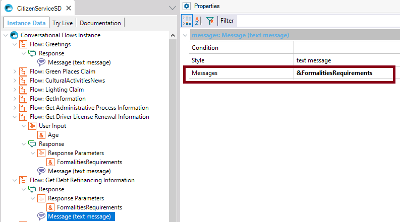
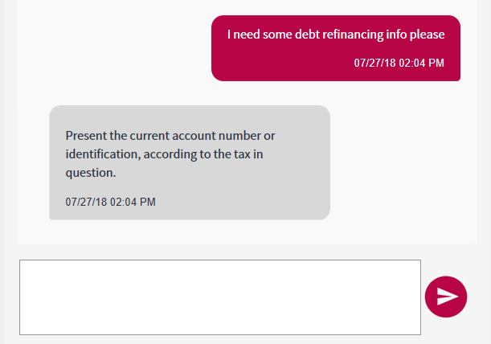

HowTo: Reference context parameters in a conversation
When designing a chatbot Flow, it may be necessary to reference some context parameters. You can reference the context parameters using the '&' character. The context parameters can be used at any level of the Flow: On Error Messages property, Message conditions, User Input conditions, Messages, and Ask Messages property.
ExampleIn this example, you'll see how to reference the context output of a procedure executed to fulfill the Chatbot Intent of a Flow. The context parameter will be used in the Messages returned after the execution of the flow. Consider the following example, where a Flow is defined, whose related intent is to get debt refinancing information in a chatbot for assistance to citizens.  The "DebtRefinancingInfo" code is as follows. Note that it returns a variable called &FormalitiesRequirements:
parm(out:&FormalitiesRequirements);
for each FormalitiesDetails
where FormalitiesReason = FormalitiesReason.DebtRefinancing
&FormalitiesRequirements = FormalitiesRequirements
endfor
To return the complete output of the DebtRefinancingInfo procedure to the user, the Message Response defined in the Flow has the Messages Property set to &FormalitiesRequirements.  At runtime:  See also |